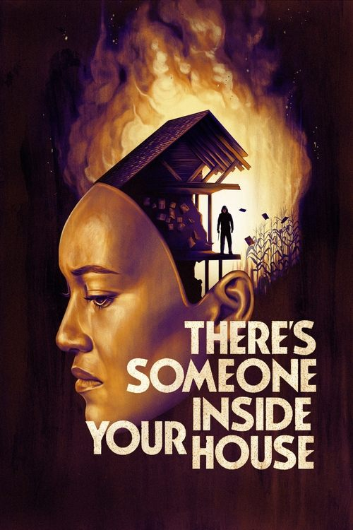

There's Someone Inside Your House (2021)
الوصف: As the countdown to graduation begins, students at Osborne High are being stalked by a maniac intent on exposing their darkest secrets to the entire town, terrorizing victims while wearing a life-like mask of their own face. With a mysterious past of her own, Makani and her friends must discover the killer's identity before they become victims themselves.
الممثلون
- Sydney Park (Makani Young)
- Théodore Pellerin (Oliver Larsson)
- Asjha Cooper (Alex Crisp)
- Dale Whibley (Zach Sandford)
- Jesse LaTourette (Darby)
- Diego Josef (Rodrigo Doran)
- Burkely Duffield (Caleb Greeley)
- Sarah Dugdale (Katie Koons)
- William MacDonald (Mr. Sandford)
- Andrew Dunbar (Deputy Larsson)
المخرج: Patrick Brice
المنتج: Michael Clear